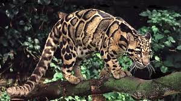
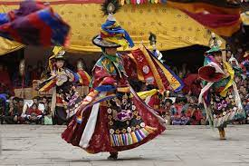

State Food

State Dance
State Tourism
State Wildlife

State Festivals

Indrakil, Garden of War God Indra
Sikkim is least populous and second smallest among the Indian states.
Sikkim is notable for its biodiversity, including alpine and subtropical climates,
as well as being a host to Kanchenjunga, the highest peak in India and third highest on Earth.
Sikkim's capital and largest city is Gangtok.